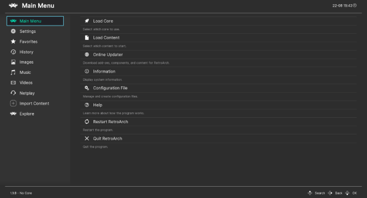
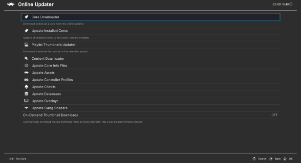
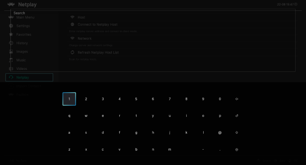
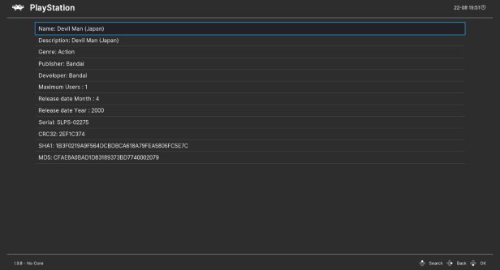

Overview
- Main Menu realiza acciones importantes como iniciar un juego o salir del programa.
- History: tu lista de historial de juegos.
- Images: su historial de imágenes.
- Music: tu lista de historial musical.
- Videos: tu historial de vídeos.
- Netplay Rooms: encuentre sesiones de juego organizadas por otros jugadores y únase a ellas.
- Settings: para configurar Xemulator.
- Add: esta pestaña le permite escanear su colección de juegos para generar listas de
reproducción
por sistema. Las listas de reproducción se agregarán como nuevas pestañas a la derecha.

Integrated download

- Main Menu->Online Updater: puede descargar y actualizar todos los
componentes necesarios y opcionales para Xemulator.
- Libretro cores: emuladores y motores de juegos.
- A game database: utilizada por nuestro sistema de escaneo para crear listas de
reproducción y mostrar los metadatos de los juegos.
- Game thumbnails: recuadro, pantalla de título, en la pantalla del juego, para cada
sistema.
- Controller profiles: asignaciones automáticas para gamepads, joysticks y otros
controladores de juegos comunes.
- Cheats: etrucos para los juegos más habituales.
- Shaders: filtros de video para aplicar en la pantalla del juego.
- Content downloader: juegos gratuitos y otro contenido descargable..
Fully controller driven
En la GUI de Xemulator, los controladores de juegos son la forma preferida de
navegar. Puede realizar todas las acciones con el controlador, incluido el inicio de
juegos o la activación del menú RetroArch desde el juego activo.
Cuando necesite escribir texto en la interfaz de configuración, se mostrará un teclado
en pantalla multilingüe para permitirle escribir palabras y contraseñas con su
controlador o pantalla táctil.
El menú ha sido diseñado como una experiencia inmersiva: no tendrás que cambiar
de tu controlador a tu teclado para realizar acciones usando el menú mientras tu
juego sigue jugando en segundo plano.

Playlist
Puede agregar nuevas listas de reproducción a la GUI escaneando su colección de
juegos. Los juegos se ordenarán por sistema. También puede escribir sus propias listas
de reproducción manualmente para mostrar una lista de sus juegos favoritos o cualquier
lista que se le ocurra.
Las entradas de la lista de reproducción se pueden asociar a una entrada de la base de
datos para mostrar los metadatos del juego: año de lanzamiento, género, desarrollador,
número de jugadores, etc.
